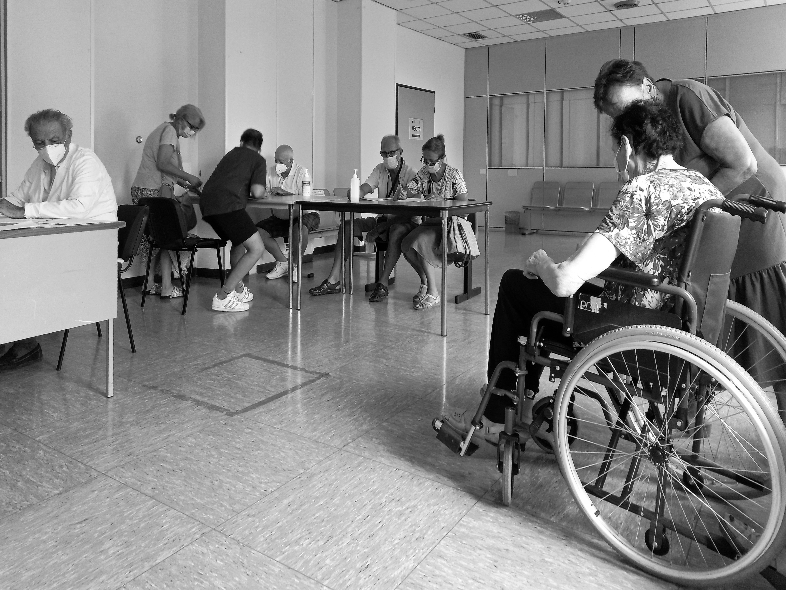

A PRACTICAL STARTING POINT
Start with your own journey.
You don’t need to know every detail before the first conversation. Start with where you’re going, when you need to arrive, and the mobility device you use.
Then ask the provider to confirm what the assigned vehicle can accommodate. The aim is a clear arrangement that reflects your preferences, rather than assumptions about what you need.

01 / THE DEVICE
Share the details that affect fit.
Tell the provider whether you use a manual wheelchair, powered wheelchair, or mobility scooter. Have dimensions and weight information ready when available.
Ask about vehicle capacity, equipment operating limits, and securement compatibility. Confirm whether you can travel in your wheelchair or whether another seating arrangement is required.
- What device information does the provider need?
- Is the assigned vehicle suitable for this device?
- How will the wheelchair be secured for the journey?
02 / BOARDING
Explain the assistance you prefer.
A ramp or lift is one part of the conversation. Explain how you prefer to board, what you can do independently, and what help you would like.
If you are unsure which equipment you need, say so. Ask the provider to explain the available options and confirm suitability before accepting the ride.
Describe what works for you. Give the provider a chance to explain what they can accommodate.
03 / THE PEOPLE TRAVELLING
Count everyone and everything.
Include caregivers and companions in your passenger count. Discuss luggage, mobility equipment, and any other items you need to bring.
If someone else is organizing the journey, agree who receives pickup information and who can be contacted if plans change. Keep the passenger involved in decisions about their assistance.
04 / THE ARRANGEMENTS
Work through pickup and return.
Share a precise pickup address and destination entrance. For appointments, discuss arrival time as well as the appointment time, allowing for boarding and reaching reception.
Agree the return pickup before setting off. Ask how to contact the provider if the visit runs late, and confirm what happens if the timing changes.
- Pickup
- Address, meeting point, date, time, and a contact number.
- Destination
- Location, entrance, arrival requirement, and any access information.
- Return
- Meeting point, timing, waiting arrangements, and contact details.
05 / BEFORE AGREEING
Confirm the fare and the terms.
Request a quote for your own journey. Ask whether it includes the return trip, any waiting time, and the assistance discussed.
Confirm cancellation and change terms, payment arrangements, vehicle suitability, and availability directly. A planning conversation or an online form does not itself create a confirmed booking.
Review the fare questionsKeep the confirmed plan handy.
Save the pickup information and provider’s contact number. If your device, companion count, or schedule changes, contact the provider to check the arrangement again.
Back to all travel guides